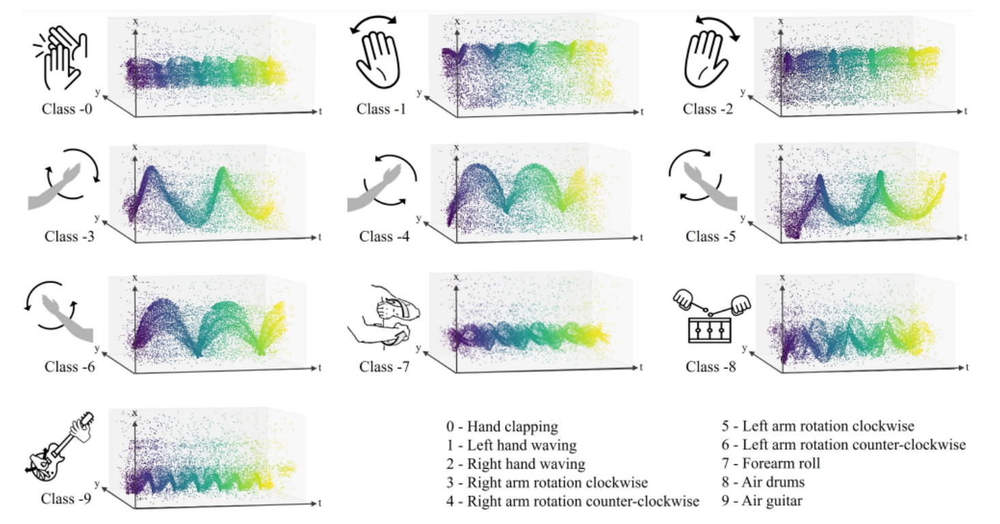
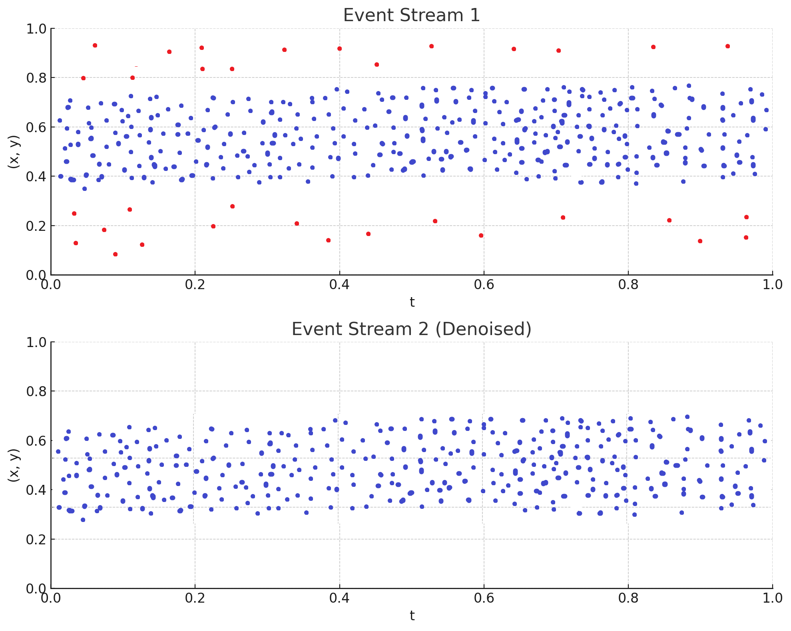
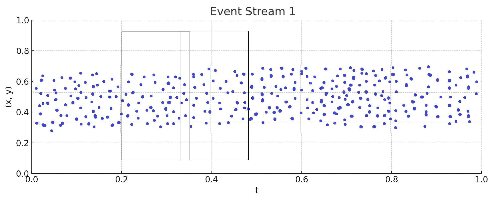
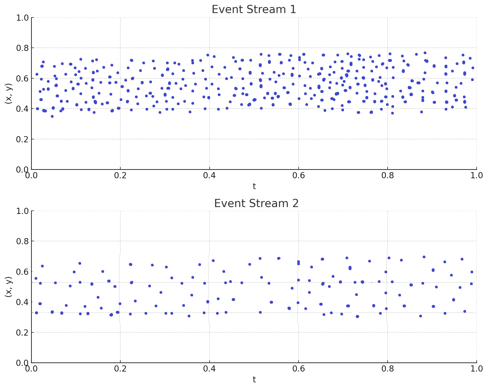
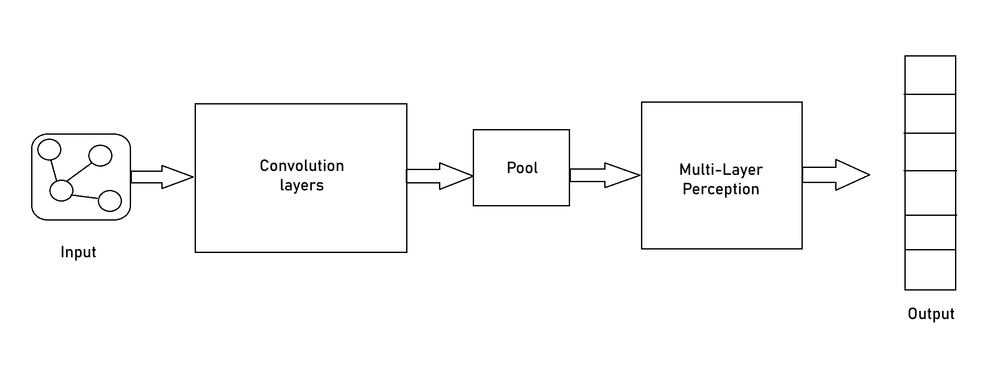

NUSense: Robust Soft Optical Tactile Sensor
Project Date: May 29, 2023
In this project, we explore the use of event-based cameras to classify hand gestures. The model used for this project is Graph Neural Networks.
Event Preprocessing Summary
The event preprocessing pipeline for DVS (Dynamic Vision Sensor) data converts raw, continuous event streams into a structured, graph-based format suitable for Graph Neural Networks (GNNs). Here’s a summary of each stage:
1. Denoising
Isolated, noisy events are removed by applying a space-time filter. This step eliminates spurious events that don't have nearby events in space and time, improving data quality and reducing the likelihood of overfitting.
2. Time Window Selection
The continuous event stream is divided into small, fixed-duration time windows. Each time window captures the events occurring within that timeframe, effectively segmenting the stream into discrete chunks. Each time window serves as a snapshot, which becomes the basis for creating a separate graph.
3. Sub-sampling and Time Normalization
Within each time window, events are sub-sampled to reduce data density and computational load. Time normalization is then applied to standardize the temporal scale across windows, ensuring consistency in the time representation for each graph.
4. Edge Creation
Events within each time window are connected to form a graph. A radius-neighborhood algorithm creates edges between nodes (events) that are spatially and temporally close within the window. This captures local spatio-temporal relationships among events in that timeframe.
The result is a sequence of graphs, each representing the spatio-temporal structure of events within a single time window. This graph sequence enables the GNN to learn dynamic patterns across time, making it effective for tasks like gesture recognition in event-based vision systems.
Graph Neural Network (GNN) Summary
Graph Neural Networks (GNNs) extend the concept of traditional Convolutional Neural Networks (CNNs) to work with data represented as graphs, rather than on grid-like data such as images. Unlike CNNs, which apply convolutional operations on a regular grid, GNNs use a graph structure with nodes (vertices) and edges that represent relationships between the data points. Here’s a breakdown of the core concepts and architecture in GNNs:
1. Graph Structure
In a graph G = (V, E), V represents the nodes (individual data points or entities), and E represents the edges, which define relationships between the nodes. The structure of the graph is represented by an adjacency matrix, which indicates whether nodes are connected and may include edge weights or types to represent the strength or type of relationships.
2. Node and Edge Features
Each node has a feature vector that encodes information about that node. These feature vectors are combined into a node feature matrix, and similarly, edge feature vectors (if present) are combined into an edge feature matrix. This representation allows GNNs to capture node-specific and edge-specific information.
3. Graph Convolutional Layers
The core operation in GNNs includes two main steps: aggregation and updating.
- Aggregation: Each node collects feature information from its neighboring nodes through message passing. This step ensures that the node's representation incorporates relevant information from its surroundings, capturing local structure.
- Updating: The aggregated information is then transformed, often through a neural layer with learnable parameters, to update the node's feature vector. This step may change the dimensionality of the node embeddings, creating higher-level feature representations with each layer.
4. Pooling and Readout
In GNNs, pooling layers are used to reduce the graph's size by clustering nodes or sub-graphs, which helps retain important structural information. This process is critical for obtaining a graph-level representation.
The readout operation aggregates the node-level embeddings to produce a fixed-size graph representation. This step enables GNNs to perform graph-level tasks, such as classification, by transforming the entire graph into a single representation vector.
5. Model Architecture
The architecture generally includes multiple graph convolutional layers, often followed by pooling layers and a Multi-Layer Perceptron (MLP) for classification or regression. GNNs can perform tasks at different levels: node-level, edge-level, and graph-level predictions, depending on the application requirements.
By iteratively processing local neighborhoods through multiple layers, GNNs capture both local and global patterns within the graph. This property makes GNNs especially suitable for applications involving non-grid data structures, such as social networks, molecular structures, and event-based vision systems.
Technologies Used
- Event-based Vision Sensors
- Graph Neural Network (GNN)
- PyTorch Geometric
- Graph Attention Network v2 (GATv2)
- Muceptron
Project Gallery